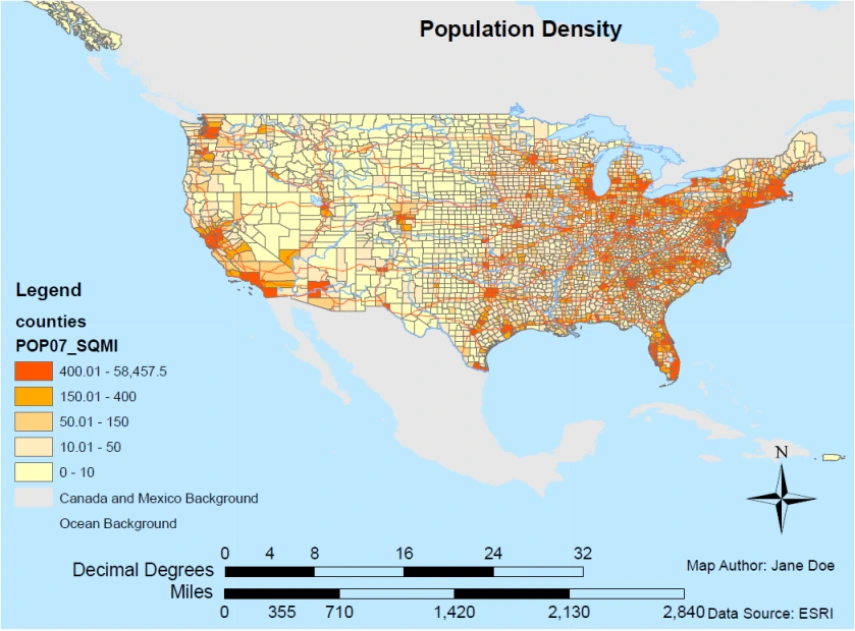

Muka peta (map face)
Bagian halaman yang berisi gambar peta, dibatasi oleh garis tepi peta (neatline).
Tata letak (layout) adalah cara menyusun muka peta dan informasi tepi dalam satu halaman.
CPMK4. Mahasiswa mampu mengevaluasi toponimi, tata letak, keseimbangan, dan kelengkapan peta berdasarkan kaidah kartografi.
Setelah mempelajari materi ini, mahasiswa mampu:
Bagian halaman yang berisi gambar peta, dibatasi oleh garis tepi peta (neatline).
Keterangan di sekitar muka peta: judul, legenda, skala, arah utara, inset (peta sisipan), sumber data, proyeksi, dan pembuat.
Bingkai membatasi seluruh isi halaman. Margin adalah ruang kosong antara bingkai dan tepi kertas.

Klik nomor merah untuk melihat nama dan fungsi setiap komponen. Sumber: RBI 1:25.000 Lembar 1607-541 Yosowilangun (Edisi I-2000), BIG.
| Tingkat | Fungsi | Contoh pada peta tematik |
|---|---|---|
| Pertama | Menyampaikan pesan utama | Tema peta (misalnya kelas kepadatan penduduk) dan judul |
| Kedua | Memberi konteks geografis | Batas wilayah, sungai, jalan utama, nama wilayah, legenda |
| Ketiga | Membantu pembacaan dan penelusuran | Skala, arah utara, inset, sumber data, proyeksi, pembuat |
Hierarki juga berlaku pada teks:
Figur (figure) adalah objek yang menjadi fokus; latar (ground) adalah konteks di sekitarnya. Peta yang baik membuat figur langsung terlihat terpisah dari latar.
Keseimbangan (balance) berarti komponen tersebar sehingga halaman tidak terasa berat di satu sisi. Dua konsep dasarnya adalah pusat optis dan bobot visual.
Bobot visual (visual weight) adalah kekuatan suatu komponen dalam menarik perhatian. Bobot visual dipengaruhi oleh:
| Faktor | Lebih berat | Lebih ringan |
|---|---|---|
| Ukuran | Besar | Kecil |
| Warna dan kecerahan | Gelap, jenuh | Terang, pucat |
| Posisi | Jauh dari pusat halaman, bagian atas dan kanan | Dekat pusat halaman |
| Isolasi | Dikelilingi ruang kosong | Berada di antara banyak komponen |
| Bentuk | Tidak beraturan, rumit | Sederhana, beraturan |
Susunan asimetris menyeimbangkan komponen yang berbeda ukuran dengan mengatur posisinya. Contoh: legenda besar di kiri bawah diimbangi inset dan judul di kanan atas.
| Media | Pertimbangan utama | Kesalahan umum |
|---|---|---|
| Kertas A4/A3 | Ukuran kertas akhir, margin, dan teks terkecil yang masih terbaca. | Peta dirancang di layar dengan perbesaran, lalu teksnya terlalu kecil saat dicetak. |
| Poster | Dibaca dari jarak jauh sehingga hierarki harus kuat. | Teks terlalu kecil dan muka peta terlalu sempit. |
| Layar komputer | Rasio layar dan ukuran jendela yang berubah. | Legenda atau tombol menutupi muka peta. |
| Ponsel | Layar sempit dan tegak; teks minimal. | Tata letak komputer dipakai tanpa penyesuaian. |


Sumber contoh: Introduction to Cartography, American Geographical Society Library.
| Aspek | Pertanyaan untuk peta sebelum perbaikan | Pertanyaan untuk peta sesudah perbaikan |
|---|---|---|
| Hierarki | Komponen mana yang pertama kali terlihat? Apakah itu pesan utama? | Apakah tema kini menjadi bagian yang paling menonjol? |
| Proporsi | Berapa bagian halaman yang dipakai muka peta? | Apakah muka peta mendapat ruang terbesar? |
| Keseimbangan | Sisi mana yang terlalu padat atau terlalu kosong? | Bagaimana bobot visual diseimbangkan? |
| Perataan | Apakah komponen tersebar tanpa pola? | Apakah komponen dikelompokkan dan diratakan? |
| No. | Aspek | Pertanyaan yang harus dijawab | Jawaban dan bukti dari peta |
|---|---|---|---|
| 1 | Pesan utama | Tulis pesan utama peta dalam satu kalimat dengan rumus [fenomena] + [di mana] + [pola]. | … |
| 2 | Urutan perhatian | Lihat peta selama 5 detik, lalu tutup. Komponen apa yang kamu ingat pertama, kedua, dan ketiga? | … |
| 3 | Kesesuaian hierarki | Apakah yang terlihat pertama sama dengan pesan utama? Jawab "ya" atau "tidak" dan jelaskan alasannya. | … |
| 4 | Proporsi muka peta | Kira-kira berapa persen halaman yang dipakai muka peta? Apakah muka peta mendapat ruang terbesar? | … |
| 5 | Kelengkapan informasi tepi | Centang yang ada: judul, legenda, skala, arah utara, sumber, tahun, inset. Komponen mana yang tidak ada? | … |
| 6 | Figur–latar | Apakah wilayah atau tema utama langsung terpisah dari latar? Bagian mana yang mengganggu? | … |
| 7 | Keseimbangan | Bagi halaman menjadi empat kuadran. Kuadran mana yang terlalu padat dan mana yang terlalu kosong? | … |
| 8 | Perataan dan ruang kosong | Apakah tepi judul, legenda, dan skala sejajar? Adakah ruang kosong besar yang tidak berfungsi? | … |
| 9 | Keterbacaan | Apakah teks terkecil (misalnya isi legenda atau sumber) masih terbaca pada ukuran tampilan sebenarnya? | … |
| 10 | Usulan perbaikan | Tulis tiga usulan dengan format: komponen – tindakan – alasan. | … |

| No. | Aspek | Contoh jawaban |
|---|---|---|
| 1 | Pesan utama | Risiko kebakaran hutan dan lahan paling tinggi berada di Sumatra bagian timur, Kalimantan bagian tengah dan selatan, serta Papua bagian selatan. |
| 2 | Urutan perhatian | Pertama: warna jingga–merah di Sumatra dan Kalimantan. Kedua: warna hijau dan latar laut bertekstur relief dasar laut. Ketiga: judul di kiri atas. |
| 3 | Kesesuaian hierarki | Ya. Wilayah berisiko tinggi terlihat pertama, sehingga sesuai dengan pesan utama. |
| 4 | Proporsi muka peta | Sekitar 85% halaman dipakai muka peta, sehingga muka peta mendapat ruang terbesar. |
| 5 | Kelengkapan informasi tepi | Ada judul, legenda (kiri bawah), skala grafis, arah utara, dan sumber (kanan bawah). Tahun tidak ada di judul dan hanya tersirat di daftar sumber (2021). Inset tidak diperlukan karena peta mencakup seluruh Indonesia. |
| 6 | Figur–latar | Kurang kuat. Relief dasar laut yang bertekstur dan berwarna biru tua bersaing dengan tema di daratan. |
| 7 | Keseimbangan | Seimbang. Judul di kiri atas diimbangi logo BNPB di kanan atas, dan legenda di kiri bawah diimbangi skala, arah utara, dan sumber di kanan bawah. |
| 8 | Perataan dan ruang kosong | Komponen di bawah sejajar dengan garis tepi peta. Tidak ada ruang kosong besar yang tidak berfungsi. |
| 9 | Keterbacaan | Isi legenda dan daftar sumber sangat kecil dan sulit dibaca jika peta dicetak pada kertas A4. |
| 10 | Usulan perbaikan | (1) Judul – tambahkan tahun ", 2021" – agar pembaca tahu waktu data. (2) Latar laut – ganti relief dasar laut dengan biru muda polos – agar tema di daratan lebih menonjol. (3) Legenda – perbesar huruf dan kotak warna indeks risiko – agar kelas rendah, sedang, dan tinggi mudah dibedakan. |
| Kriteria | Baik | Perlu perbaikan |
|---|---|---|
| Identitas peta | Gambar peta, judul, lembaga, tahun, dan tautan lengkap. | Gambar atau sumber peta tidak dicantumkan. |
| Pesan utama | Satu kalimat yang memuat fenomena, lokasi, dan pola. | Hanya mengulang judul peta. |
| Bukti | Setiap jawaban menunjuk bagian peta yang jelas, misalnya "legenda di kiri bawah". | Jawaban umum tanpa menunjuk bagian peta, misalnya "kurang bagus". |
| Usulan perbaikan | Tiga usulan dengan format komponen – tindakan – alasan. | Usulan tidak spesifik atau tanpa alasan. |